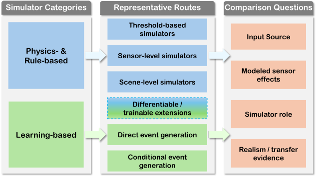
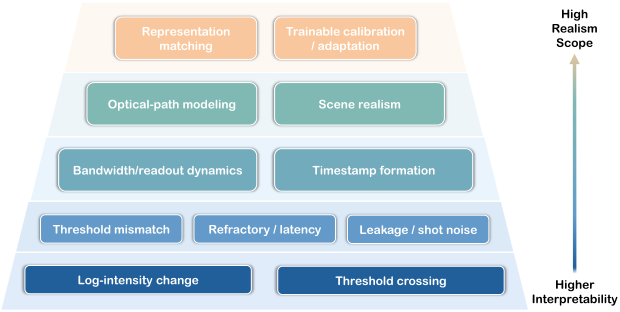

Simulator Design
It compares event-generation pipelines by their sensing assumptions, input modality, output form, and modeled non-idealities.
Companion page to the review
A companion entry point for a review of event-camera simulation, covering physics- and rule-based simulation, learning-based event generation, and evaluation evidence for simulator realism.
The paper treats event-camera simulation as a separate research topic, not only as a preprocessing step for downstream event-vision tasks.
It compares event-generation pipelines by their sensing assumptions, input modality, output form, and modeled non-idealities.
It organizes work into physics- and rule-based simulation and learning-based event generation, with route-level distinctions.
It reads realism by claim type: signal fidelity, sensor calibration, scene realism, sim-to-real transfer, and task utility.
The categories follow how synthetic events are produced. Evaluation and benchmarking are treated as cross-route evidence rather than a single score.
Threshold-based, sensor-level, and scene-level routes preserve an explicit event-formation chain, so their assumptions can be inspected and calibrated.
Direct and conditional generators learn event streams or event representations from images, videos, prompts, parameters, or control signals.

The figure matches the review's category language and the catalog below.
The GitHub repository keeps the public-facing resource catalog separate from the paper PDF. The README is the maintained catalog; contribution guidelines and BibTeX entries are maintained alongside it.
physics- and rule-based resources
learning-based resources
evaluation and benchmark resources
Pineda Garcia et al., pyDVS: An Extensible Real-Time Dynamic Vision Sensor Emulator
Bi and Andreopoulos, PIX2NVS: Parameterized Conversion of Pixel-Domain Video Frames to Neuromorphic Vision Streams
Mueggler et al., The Event-Camera Dataset and Simulator: Event-Based Data for Pose Estimation, Visual Odometry, and SLAM
Rebecq, Gehrig, and Scaramuzza, ESIM: an Open Event Camera Simulator
Scheerlinck et al., CED: Color Event Camera Dataset
Gehrig et al., Video to Events: Recycling Video Datasets for Event Cameras
Pantho et al., Event Camera Simulator Design for Modeling Attention-based Inference Architectures
Ziegler et al., Real-time Event Simulation with Frame-Based Cameras
Ma et al., I2E: Real-Time Image-to-Event Conversion for High-Performance Spiking Neural Networks
Stoffregen et al., Reducing the Sim-to-Real Gap for Event Cameras
Joubert et al., Event Camera Simulator Improvements via Characterized Parameters
Hu, Liu, and Delbruck, v2e: From Video Frames to Realistic DVS Events
Radomski et al., Enhanced Frame and Event-Based Simulator and Event-Based Video Interpolation Network
Mou et al., Accurate Event Simulation using High-Speed Videos
Lin et al., DVS-Voltmeter: Stochastic Process-Based Event Simulator for Dynamic Vision Sensors
Jiang, Zhou, and Lin, ADV2E: Bridging the Gap Between Analogue Circuit and Discrete Frames in the Video-to-Events Simulator
Ning et al., Raw2Event: Converting Raw Frame Camera into Event Camera
Lu et al., Hybrid Event Frame Sensors: Modeling, Calibration, and Simulation
Lou et al., V2V: Scaling Event-Based Vision through Efficient Video-to-Voxel Simulation
Kaiser et al., Towards a Framework for End-to-End Control of a Simulated Vehicle with Spiking Neural Networks
Palinauskas et al., Generating Event-Based Datasets for Robotic Applications using MuJoCo-ESIM
Tsuji et al., Event-Based Camera Simulation Using Monte Carlo Path Tracing with Adaptive Denoising
Li et al., BlinkFlow: A Dataset to Push the Limits of Event-based Optical Flow Estimation
Han et al., Physical-Based Event Camera Simulator
Manabe et al., Monte Carlo Path Tracing and Statistical Event Detection for Event Camera Simulation
Reinold, Ghosh, and Gallego, Combined Physics and Event Camera Simulator for Slip Detection
Rodriguez et al., An Event Camera Simulator for Arbitrary Viewpoints Based on Neural Radiance Fields
Li et al., GS2E: Gaussian Splatting is an Effective Data Generator for Event Stream Generation
Li et al., EventTracer: Fast Path Tracing-Based Event Stream Rendering
Kyatham et al., EREBUS: End-to-End Robust Event Based Underwater Simulation
Middleton et al., Modelling and Simulation of Neuromorphic Datasets for Anomaly Detection in Computer Vision
CARLA DVS plugin
Microsoft AirSim Event Camera simulation plugin
Nehvi et al., Differentiable Event Stream Simulator for Non-Rigid 3D Tracking
Gu et al., How to Learn a Domain-Adaptive Event Simulator
Greene et al., SENPI: A PyTorch-Enabled Tool for Synthetic Event Camera Data Generation and Algorithm Development
Zhu et al., EventGAN: Leveraging Large Scale Image Datasets for Event Cameras
Masuda et al., Neural Implicit Event Generator for Motion Tracking
Zhang et al., V2CE: Video to Continuous Events Simulator
Bhattacharya et al., EvDNeRF: Reconstructing Event Data with Dynamic Neural Radiance Fields
Gu et al., Reliable Event Generation With Invertible Conditional Normalizing Flow
Ott, Wang, and Liu, Text-to-Events: Synthetic Event Camera Streams from Conditional Text Input
Zhang et al., An Event-Oriented Diffusion-Refinement Method for Sparse Events Completion
Hu et al., ControlEvents: Controllable Synthesis of Event Camera Data with Foundational Prior from Image Diffusion Models
Cannici et al., N-ROD: A Neuromorphic Dataset for Synthetic-to-Real Domain Adaptation
Planamente et al., DA4Event: Towards Bridging the Sim-to-Real Gap for Event Cameras Using Domain Adaptation
Ziegler et al., BiasBench: A Reproducible Benchmark for Tuning the Biases of Event Cameras
Chanda et al., Event Quality Score (EQS): Assessing the Realism of Simulated Event Camera Streams via Distances in Latent Space
Tan, B N, and Chakravarthi, How Real is CARLA's Dynamic Vision Sensor? A Study on the Sim-to-Real Gap in Traffic Object Detection
Resources are grouped by the same category structure used in the README catalog.
The page highlights the review's core caution: event-count accuracy, timestamp fidelity, parameter calibration, scene realism, and downstream gains support different claims.

The companion page keeps the realism framing visible because this is the practical part readers need when selecting a simulator.
The repository is designed as a companion resource for the review, with a curated catalog, contribution guidance, and reference metadata.
Browse the on-page catalog grouped by the review's simulation categories.
Use the README categories to browse simulation routes and modeling assumptions.
Use the reference file for citation metadata maintained with the catalog.
Add entries conservatively with paper metadata, public links, and category evidence.
A citable paper record is not yet public. Until then, cite the individual papers in the catalog.
@misc{event_camera_simulation_review,
title = {Event-Camera Simulation: A Review},
note = {Citation metadata will be updated after public release},
year = {2026}
}